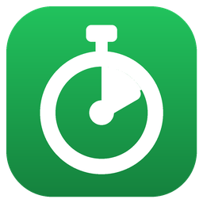
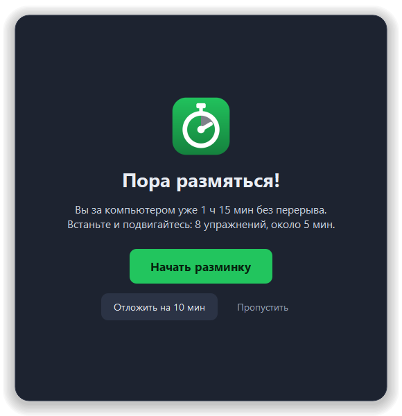

Обычная установка
Запустите установщик. Разминка появится в меню «Пуск». Права администратора не нужны.
Скачать установщик
РазминкаДля тех, кто работает за компьютером
Иногда увлечёшься — и полдня пролетело сидя. Разминка напомнит встать из-за стола и поможет сделать несколько упражнений.
Скачать для WindowsБесплатно, без регистрации. Есть версия без установки.

Программа живёт в трее, рядом с часами. Задайте, как часто напоминать о разминке и в какие часы вас можно беспокоить.
Если вы уже отошли от компьютера, отсчёт начнётся заново. В меню «Пауза» можно приостановить напоминания на 15 или 30 минут, на 1, 2 или 4 часа. Возобновить их и запустить тренировку можно в любой момент.
Выберите короткую разминку или отжимания с приседаниями: по 10 раз, затем по 15. Программа запомнит выбранную тренировку.
Упражнения на время идут по таймеру. В подходах на повторения вы сами нажимаете «Готово». Сделали меньше или больше — поправьте количество перед завершением.
Откройте настройки и нажмите «Новая тренировка». Добавьте упражнения, укажите время или повторения, расставьте их в удобном порядке. Название тренировки, подсказки и отдых между упражнениями тоже можно изменить.
В истории остаются тренировки и упражнения: что выполнили, что пропустили, сколько повторений подтвердили и сколько времени занимались. Подготовка и паузы учитываются отдельно.
История собирается с версии 1.2.8. Программа не измеряет движения: количество повторений вы подтверждаете сами.
Колокольчик, пузырьки, мультяшный свист или аркадная монетка — выбирайте настроение. Для напоминания, начала упражнения и завершения можно назначить разные звуки. У отсчёта свои короткие сигналы.
Windows 10 или 11, 64 бита. Дополнительно устанавливать библиотеки не нужно.
Запустите установщик. Разминка появится в меню «Пуск». Права администратора не нужны.
Скачать установщикРаспакуйте всю папку из архива и откройте Razminka.exe. Настройки и история останутся рядом с программой.
Скачать ZIPПоследняя версия доступна на GitHub. Что изменилось в выпусках
Рядом с часами Windows. Если значка не видно, откройте скрытые значки стрелкой. Нажмите на значок Разминки — появится меню с запуском тренировки, настройками и историей.
В меню трея откройте «Тренировка» и выберите нужную — изменение применяется сразу. Или выберите её в настройках и нажмите «Сохранить». Уже начатая тренировка останется прежней.
Обновление сохраняет ваши упражнения, настройки и историю. Новая версия устанавливается после подтверждения и перезапускает приложение. Проверить обновления вручную можно в трее или в окне «О программе».
Для тренировок и просмотра истории — нет. Интернет нужен для проверки и загрузки обновлений. Данные тренировок никуда не отправляются.
Да, все функции доступны бесплатно. Подписки и регистрации нет. Поддержать автора можно по желанию.
Меня зовут Антон Тепляков. Если хотите сказать спасибо и поддержать дальнейшую разработку — можно угостить меня кофе.
Написать автору в Telegram